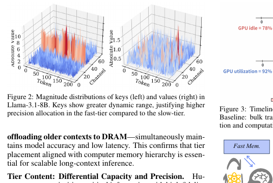
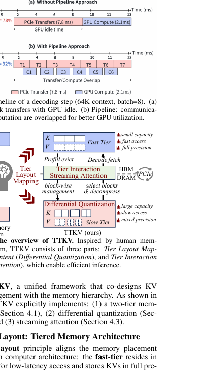
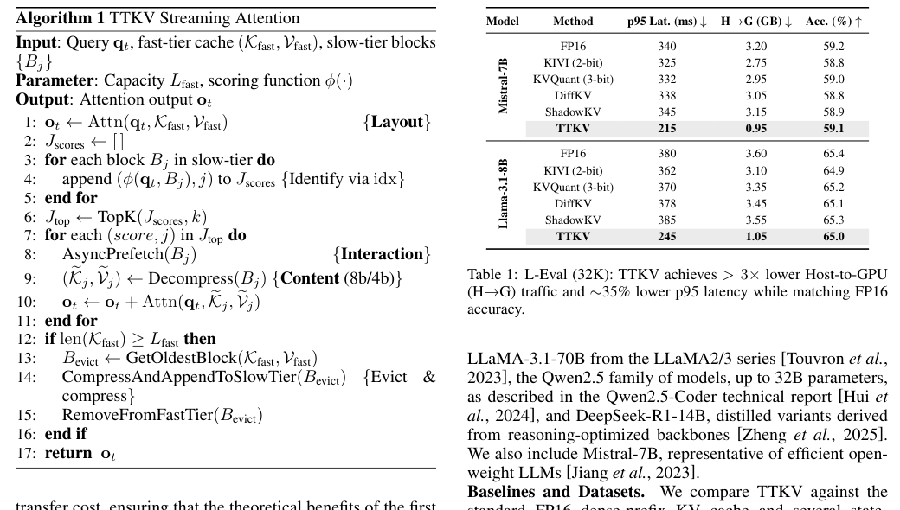
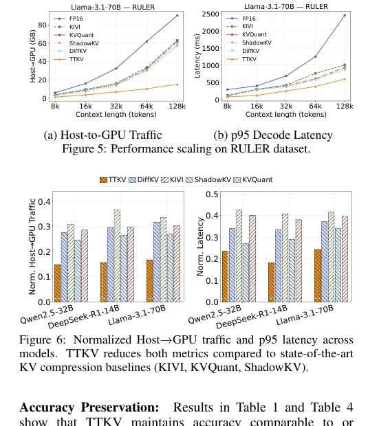
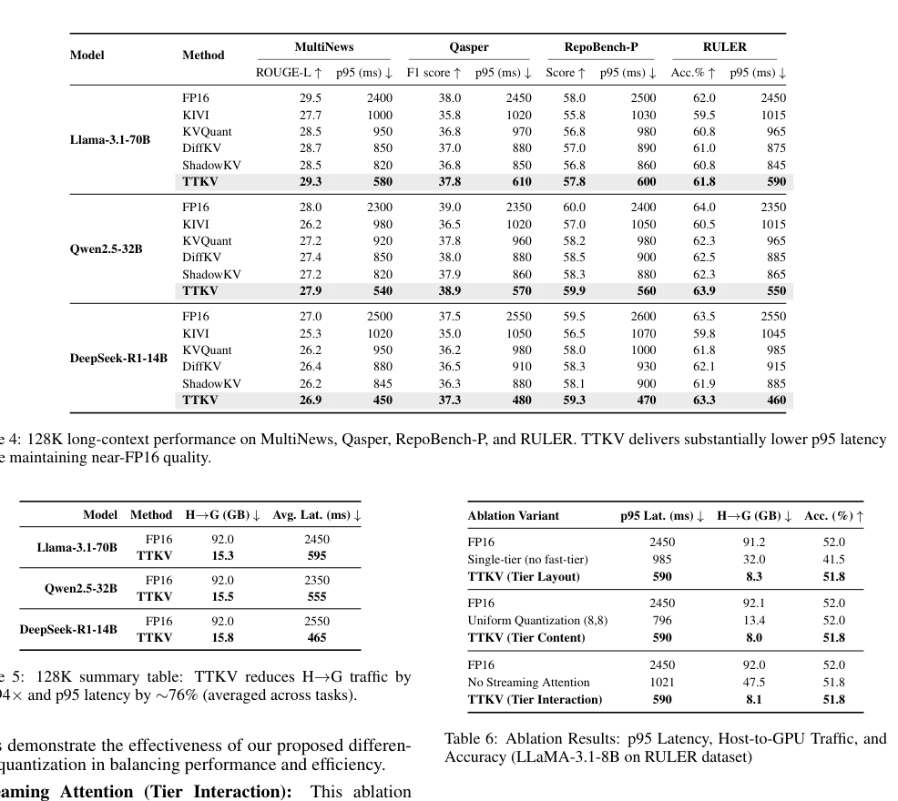

TTKV：面向长上下文 LLM Inference 的 Temporal-Tiered KV Cache 中文翻译稿
摘要。TTKV 研究长上下文推理中的 KV cache 内存和传输瓶颈。论文把人类记忆的短期/长期层次作为类比：最近且高价值的 KV 保存在 GPU HBM 的 fast tier，以全精度快速访问；更旧的上下文移动到 host DRAM 的 slow tier，并以压缩格式保存。与简单 offloading 不同，TTKV 同时做三件事：temporal tier layout 按时间和访问价值分层；differential quantization 对 key 和 value 采用不同精度；streaming attention 把 slow-tier block 识别、异步预取和注意力计算重叠起来。实验显示，在 128K context 下，TTKV 可将 Host-to-GPU traffic 降低到约 1/6，并将 p95 decode latency 降低约 76%，同时保持接近 FP16 的准确率。
1 引言
长上下文 LLM inference 的主要瓶颈已经从单纯计算转向 KV cache movement。随着上下文扩展到 64K、128K 甚至更长，所有历史 token 的 key/value 都留在 GPU 中会迅速耗尽 HBM；全部 offload 到 CPU 又会让每一步 decoding 被 PCIe 传输拖慢。
TTKV 的核心思想是 temporal locality。最近 token 更可能被频繁访问，也更应保留高精度；较早 token 虽然仍可能被用到，但访问频率较低，可以放到容量更大的慢层并压缩。这样比“全量 FP16 留在 HBM”省内存，也比“每步从 DRAM 拉大量 KV”省传输。

2 三个设计原则
论文将方法拆成三个原则。第一是 Tier Layout：fast tier 存最近 tokens，slow tier 存较老 context。fast tier 使用 GPU HBM 和 FP16，slow tier 使用 host DRAM 和压缩块。第二是 Tier Content：不同数据不必同等精度保存。实验发现 key 对 attention score 更敏感，value 更稳定，因此 key 使用 8-bit，value 使用 4-bit。
第三是 Tier Interaction：跨层访问必须被 pipeline 化。若每个 decoding step 先等待 DRAM 传输再计算，GPU 会大量空转。TTKV 将 slow-tier KV 切成 block，用 streaming attention 在计算当前可用 KV 的同时异步预取下一批 block。

3 方法细节
TTKV 将一个上下文的 KV cache 分为 \(K_{\mathrm{fast}}\)、\(V_{\mathrm{fast}}\) 和 \(K_{\mathrm{slow}}\)、\(V_{\mathrm{slow}}\)。新生成 token 先进入 fast tier；当 fast tier 达到容量上限时，最旧 block 被压缩并追加到 slow tier。slow tier 中 block 大小影响延迟和准确率：太小会增加调度与索引开销，太大则降低选择粒度。
Streaming attention 的伪代码体现了三步：先在 fast tier 上计算 attention；再对 slow-tier blocks 打分并选择 TopK；然后异步预取、解压和计算这些 blocks 的 attention，并把结果合并。这个流程不是简单缓存命中，而是面向每一步 decoding 的流式稀疏访问。

4 实验结果
实验在 L-Eval、GovReport、Qasper、MultiNews、RepoBench-P、RULER 等长上下文任务上进行，模型包括 LLaMA-3.1、Qwen2.5 和 DeepSeek-R1 蒸馏变体。指标包括 p95 latency、Host-to-GPU traffic、准确率、ROUGE-L、F1 和吞吐。
核心结果是：相比 FP16 dense KV，TTKV 在多个模型上显著降低 H->G traffic 和 p95 latency，同时准确率接近或略优于基线压缩方法。论文报告在 128K context 下，平均 H->G traffic 降低约 5.94 倍，p95 latency 降低约 76%。吞吐实验也显示，随着 context length 增长，其他方法受传输拖累明显，而 TTKV 仍保持较高 token/s。


5 局限与选题启发
TTKV 主要处理单请求或 batch 中的长上下文推理，对 workflow-level reuse、跨请求共享和多 agent 依赖没有建模。它也默认 slow tier 为 host DRAM，没有展开 SSD 或分布式 cache 的 placement 问题。
对本仓库方向的意义。TTKV 可以作为“单请求长上下文 KV 分层”的系统基线。若未来研究 agent workflow，TTKV 的 temporal tier 可扩展为 workflow-aware tier：不仅按 token 年龄，还按下游 branch probability、共享 prompt 价值和 deadline 决定哪些 KV 留在 HBM、哪些压缩到 DRAM。
参考说明
参考文献保留在原 PDF 中。本文译稿覆盖摘要、设计原则、方法、实验和对选题的启发。
论文问答
Q1：这篇论文试图解决什么问题？
它解决长上下文 LLM 推理中 KV cache 存储和 Host-to-GPU 传输过大的问题。所有 KV 保存在 GPU 会占满 HBM，全量 offload 到 host 又会让每个 decode step 等待大量数据传输。
Q2：有哪些相关研究？
相关研究包括 KV offloading、long-context inference、sparse attention、KV quantization、StreamingLLM/H2O 类 KV 保留策略，以及 LMCache/KVDrive 等多层 cache 系统。TTKV 特别强调 temporal tiering 和 key/value 差异化量化。
Q3：论文如何解决这个问题？
TTKV 把最近且高价值的 KV 留在 GPU fast tier，把较旧上下文压缩后放到 host slow tier。它对 key 和 value 采用不同精度，并用 streaming attention 把 slow-tier block 识别、异步预取、解压和 attention 计算重叠。
Q4：论文做了哪些实验？
实验在多个长上下文基准和 128K context 场景下评估准确率、Host-to-GPU traffic、p95 decode latency、throughput 和消融设置。结果显示 TTKV 能大幅减少传输量和 decode 延迟，同时保持接近 FP16 的质量。
Q5：有什么可以进一步探索的点？
可以进一步研究多请求共享上下文、SSD 层扩展、与 KVDrive/LMCache 的系统集成，以及动态任务中哪些旧 token 仍应高精度保留。也可以把 temporal tiering 与 workflow-level cache 价值预测结合。
Q6：总结一下论文的主要内容。
TTKV 的主要内容是把 KV cache 按时间和价值分层：近的、重要的留在 GPU，远的压缩放到 host，并通过流式 attention 隐藏传输延迟。它是长上下文推理 cache 分层的一篇重要系统参考。